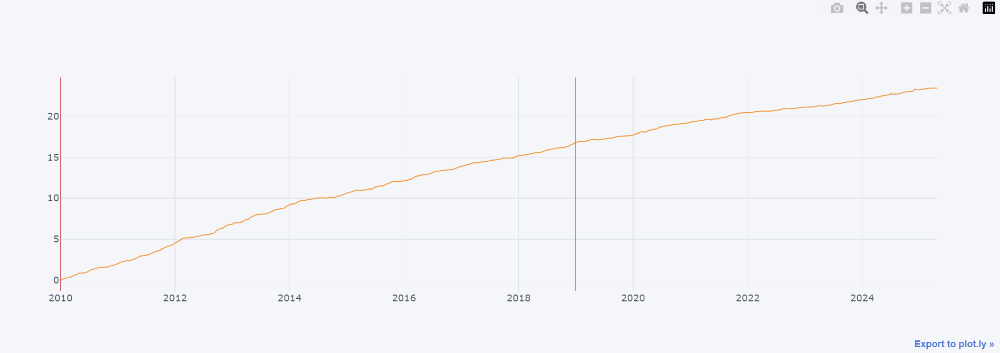

因子挖掘技術分析：基於遺傳演算法的多因子選股策略
本文將詳細分析一個基於遺傳演算法(GA)的因子挖掘系統，該系統整合了價量資料和財報資料，並使用夏普比率作為適應度函數。
一、系統架構概述
本系統採用遺傳演算法進行因子挖掘，主要包含以下核心組件：
- GA選股器（GAStockSelection）：負責整個遺傳演算法的流程控制，包括族群初始化、選擇、交配和突變等操作
- 因子池優化機制：管理因子庫，包括因子的添加、刪除和權重調整
- 適應度評估系統：計算每個個體的適應度值，使用夏普比率作為主要評估指標
- 遺傳操作實現：包含選擇、交配和突變等遺傳操作的核心實現
二、資料處理與特徵工程
1. 資料來源
系統整合了兩大類資料：
- 價量資料：
- 價格資料：收盤價、開盤價、最高價、最低價
- 成交量資料：日成交量、成交金額
- 技術指標：RSI、MACD、KD、布林通道等
- 市場情緒指標：融資融券、外資持股等
- 財報資料：
- 財務比率：ROE、ROA、負債比率等
- 成長性指標：營收成長率、EPS成長率等
- 營運效率：存貨週轉率、應收帳款週轉率等
- 現金流量指標：營業現金流量、自由現金流量等
2. 資料預處理
在進行因子挖掘前，系統會進行以下預處理：
- 異常值檢測與處理：
- 使用3倍標準差法識別異常值
- 使用IQR（四分位距）方法處理極端值
- 對異常值進行縮尾處理（Winsorization）
- 標準化處理：
- Z-score標準化：適用於正態分佈的資料
- Min-Max標準化：適用於有界資料
- Robust標準化：適用於有異常值的資料
- 特徵選擇：
- 使用相關係數矩陣去除高度相關的特徵
三、遺傳演算法實現
1. 染色體設計
染色體採用二進制編碼，每個基因代表一個因子的選擇狀態：
- 1：選擇該因子，表示該因子被納入投資組合
- 0：不選擇該因子，表示該因子被排除
染色體長度等於因子庫中的因子數量，例如如果有100個因子，則染色體長度為100位元。
2. 適應度函數
使用夏普比率作為適應度函數，計算公式如下：
# 適應度計算核心邏輯
def calculate_sharpe_ratio(returns, risk_free_rate=0.02):
"""計算給定收益率序列的年化夏普比率"""
# 計算年化收益率 (假設一年252個交易日)
annual_return = np.mean(returns) * 252
# 計算年化波動率
annual_volatility = np.std(returns) * np.sqrt(252)
# 檢查波動率是否為零或非常接近零，避免除以零錯誤
if annual_volatility < 1e-8:
# 如果波動率為零，通常意味著沒有風險，夏普比率無意義或可視為零
return 0.0
# 計算夏普比率
sharpe_ratio = (annual_return - risk_free_rate) / annual_volatility
return sharpe_ratio
# 投資組合收益計算範例 (假設 returns 是因子收益率, chromosome 是因子權重)
# portfolio_returns = np.dot(returns, chromosome)
# 計算適應度 (夏普比率)
# fitness = calculate_sharpe_ratio(portfolio_returns)
夏普比率衡量的是每單位風險所獲得的超額收益，數值越高表示風險調整後的收益越好。
3. 遺傳操作
3.1 選擇機制
採用輪盤式選擇（Roulette Wheel Selection）：
- 根據適應度值計算選擇機率：
# 計算選擇機率 def calculate_selection_probability(fitness_values): """根據適應度值計算輪盤式選擇的機率""" # 處理負適應度值 min_fitness = min(fitness_values) if min_fitness < 0: # 使用線性變換將所有適應度值轉為正值 (加上一個小數避免全為0) fitness_values = [f - min_fitness + 1e-6 for f in fitness_values] # 計算總適應度 total_fitness = sum(fitness_values) # 檢查總適應度是否為零或非常接近零 if total_fitness < 1e-8: # 如果所有適應度都接近零，則賦予相等機率 num_individuals = len(fitness_values) # 避免除以零 if num_individuals == 0: return [] return [1.0 / num_individuals] * num_individuals # 計算選擇機率 probabilities = [f / total_fitness for f in fitness_values] return probabilities - 處理負適應度值的情況：使用線性變換將所有適應度值轉為正值
- 確保選擇的公平性：使用累積機率進行選擇，避免選擇偏差
3.2 交配操作
實現單點交配策略：
# 單點交配實現
def single_point_crossover(parent1, parent2):
"""執行單點交配操作，生成兩個子代"""
# 確保父代長度相同且不為空
if len(parent1) != len(parent2) or len(parent1) == 0:
raise ValueError("父代染色體長度必須相同且不為零")
# 隨機選擇交叉點 (不包含第一個和最後一個位置)
# 如果染色體長度只有1，則無法進行交配，直接回傳原父代
if len(parent1) < 2:
return parent1.copy(), parent2.copy()
crossover_point = np.random.randint(1, len(parent1))
# 產生子代
# 子代1 = 父代1的前半部分 + 父代2的後半部分
child1 = np.concatenate([parent1[:crossover_point], parent2[crossover_point:]])
# 子代2 = 父代2的前半部分 + 父代1的後半部分
child2 = np.concatenate([parent2[:crossover_point], parent1[crossover_point:]])
return child1, child2
- 隨機選擇交叉點：在染色體長度範圍內隨機選擇一個位置
- 交換父代染色體的部分基因：在交叉點處交換兩個父代的基因
- 產生兩個子代：每個交配操作產生兩個新的子代
3.3 突變操作
以特定機率進行基因突變：
# 突變操作實現
def mutation(chromosome, mutation_rate=0.02):
"""對染色體的每個基因以指定機率進行突變 (0變1, 1變0)"""
# 檢查突變率是否有效
if not 0 <= mutation_rate <= 1:
raise ValueError("突變率必須介於 0 和 1 之間")
# 複製染色體以避免修改原始個體
mutated_chromosome = chromosome.copy()
# 對每個基因進行突變檢查
for i in range(len(mutated_chromosome)):
if np.random.random() < mutation_rate:
# 翻轉基因值 (0 變成 1, 1 變成 0)
mutated_chromosome[i] = 1 - mutated_chromosome[i]
return mutated_chromosome
- 突變率可調（預設0.02）：控制基因突變的頻率
- 包含有效性檢查：確保突變後的染色體仍然有效
- 確保突變後仍符合約束條件：檢查最小和最大選取因子數的限制
四、優化策略
1. 早停機制
引入早停機制避免過度擬合：
# 早停機制實現
def early_stopping(best_fitness_history, patience=10, min_delta=0.001):
"""檢查是否滿足早停條件"
Args:
best_fitness_history (list): 記錄每代最佳適應度值的列表
patience (int): 連續多少代無顯著改善時觸發早停
min_delta (float): 判定為顯著改善的最小閾值
Returns:
bool: True表示滿足早停條件，False則否
"""
# 如果記錄的歷史不足 patience 期，則不停止
if len(best_fitness_history) < patience:
return False
# 獲取最近 patience 期的最佳適應度值
recent_history = best_fitness_history[-patience:]
# 檢查最近 patience 期內是否有顯著改善
# 計算這段期間的最大值和最小值之差
improvement = max(recent_history) - min(recent_history)
# 如果改善程度小於設定的最小閾值，則觸發早停
return improvement < min_delta
- 設置patience參數：控制連續多少代無改善時停止
- 監控適應度改善情況：記錄每代的最佳適應度值
- 當連續多代無改善時停止：避免無謂的計算
2. 約束條件
系統實現了多種約束條件：
# 約束條件檢查
def check_constraints(chromosome, min_pick=3, max_pick=10, forced_indices=None):
"""檢查染色體是否滿足設定的約束條件"
Args:
chromosome (np.array): 需要檢查的染色體 (二進制)
min_pick (int): 允許選擇的最少因子數量
max_pick (int): 允許選擇的最大因子數量
forced_indices (list, optional): 必須選擇的因子索引列表. Defaults to None.
Returns:
bool: True表示滿足所有約束條件，False則否
"""
# 計算選取的因子數量 (染色體中 1 的數量)
num_picked = np.sum(chromosome)
# 檢查是否在最小和最大選取數量之間
if not min_pick <= num_picked <= max_pick:
return False
# 檢查是否強制選擇了指定的因子
if forced_indices is not None:
for index in forced_indices:
# 確保索引有效
if index < 0 or index >= len(chromosome):
print(f"警告：強制選擇的索引 {index} 超出範圍")
continue # 或者可以返回 False 或拋出錯誤
# 檢查對應位置的基因是否為 1
if chromosome[index] != 1:
return False
# 所有檢查通過
return True
- 最小選取因子數（min_pick）：確保投資組合的分散性
- 最大選取因子數（max_pick）：控制投資組合的複雜度
- 強制選擇特定因子（forced_indices）：確保重要因子被納入
五、效能優化
1. 向量化運算
使用numpy進行高效運算：
# 向量化適應度計算
def batch_fitness_calculation(population, returns):
"""使用向量化操作批量計算族群中每個個體的適應度 (夏普比率)"""
# population: (N, M) N個個體, M個因子
# returns: (T, M) T個時間點, M個因子
# 計算每個個體在每個時間點的組合收益率
# (T, M) x (M, N) -> (T, N)
portfolio_returns_per_individual = np.dot(returns, population.T)
# 對每個個體 (每一列) 計算夏普比率
# 注意：需要確保 calculate_sharpe_ratio 函數在此處可用
sharpe_ratios = np.array([calculate_sharpe_ratio(ind_returns)
for ind_returns in portfolio_returns_per_individual.T])
return sharpe_ratios
- 矩陣運算替代循環：使用numpy的矩陣運算提高效率
- 批量處理適應度計算：一次計算整個族群的適應度
- 優化記憶體使用：使用稀疏矩陣存儲大規模資料
2. 並行計算
實現族群評估的並行化：
# 並行適應度計算
# 注意：需要導入 multiprocessing 模組
from multiprocessing import Pool
import numpy as np # 假設已導入 numpy
def parallel_fitness_calculation(population, returns, n_processes=4):
"""使用多進程並行計算族群的適應度"""
# population: (N, M) N個個體, M個因子
# returns: (T, M) T個時間點, M個因子
# 確保進程數量有效
if n_processes <= 0:
n_processes = 1 # 至少使用一個進程
try:
# 將族群分割成大致相等的塊，數量等於進程數
# 使用 array_split 以應對無法均分的情況
chunks = np.array_split(population, n_processes)
# 創建進程池
with Pool(processes=n_processes) as pool:
# 為每個塊準備參數列表
# 注意：假設 batch_fitness_calculation 函數已定義且可用
args_list = [(chunk, returns) for chunk in chunks]
# 使用 starmap 並行執行 batch_fitness_calculation
# starmap 會將參數列表中的每個元組解包後傳遞給目標函數
results_list = pool.starmap(batch_fitness_calculation, args_list)
# 合併來自不同進程的結果
all_sharpe_ratios = np.concatenate(results_list)
return all_sharpe_ratios
except Exception as e:
print(f"並行計算過程中發生錯誤: {e}")
# 可以選擇返回空列表、None 或重新拋出異常
return np.array([])
- 多進程處理適應度計算：利用多核CPU提高計算效率
- 優化計算資源利用：根據CPU核心數動態調整進程數
- 提升運算效率：減少計算時間，提高系統響應速度
六、實作建議
1. 參數調優
建議的參數設置：
- 族群大小：因子數量的2-3倍，確保足夠的遺傳多樣性
- 突變率：1%-5%，平衡探索和開發
- 早停參數：代數的10%-20%，避免過度擬合
2. 風險控制
建議加入的風險控制機制：
- 最大回撤限制：控制投資組合的最大損失
- 波動率控制：限制投資組合的波動範圍
- 換手率限制：控制交易頻率，降低交易成本
七、未來改進方向
1. 多目標優化
可以考慮加入：
- 收益-風險平衡：同時優化多個目標函數
- 交易成本考慮：將交易成本納入適應度計算
- 流動性限制：考慮市場衝擊成本
2. 動態調整機制
建議實現：
- 自適應突變率：根據收斂情況動態調整突變率
- 動態交叉策略：根據種群多樣性調整交叉方式
- 局部搜索機制：在收斂後進行局部優化
八、研究成果展示
1. 挖掘出的優質因子範例
以下是系統挖掘出的部分高IC值因子，按照IC值大小排序：
| 排名 | 因子表達式 | CAGR | 使用指標 |
|---|---|---|---|
| 1 | signedpower(max(daily_EMA5, truediv(Neutralization(overnight_EMA5, Volume), Lower_shadow)), 20) | 684.918 | daily_EMA5, overnight_EMA5, Volume, Lower_shadow |
| 2 | truediv(signedpower(BPROE_Quantile, 30), delay(intraday_range, 3)) | 555.596 | BPROE_Quantile, intraday_range |
| 3 | signedpower(ts_product(BPROE_Quantile, 2), 20) | 496.884 | BPROE_Quantile |
| 4 | ts_min(signedpower(BPROE_Quantile, 60), 3) | 435.778 | BPROE_Quantile |
| 5 | ts_product(truediv(truediv(GapReturn, Lower_shadow), Lower_shadow), 3) | 408.737 | GapReturn, Lower_shadow |
2. 因子分析
從上述挖掘結果中，我們可以觀察到以下幾個重要特點：
- 價量因子的重要性：排名第一的因子結合了日內EMA、隔夜EMA和成交量等價量指標，價量因子還是有其重要性。
- BPROE的預測力：多個高fitness因子都使用了BPROE指標，證實了基本面因子的重要性。
- 技術指標組合：系統成功發掘出多個技術指標的有效組合，如GapReturn和Lower_shadow的比值關係。
- 時序特徵：許多高fitness因子都包含時序運算（如ts_product、ts_min等），說明價格動量和趨勢特徵的重要性。
3. 實務應用建議
基於以上發現，在實際應用中建議：
- 重視價量數據的收集和處理，特別是日內價格和成交量數據
- 將基本面指標（如BPROE）與技術指標結合，以提升預測效果
- 在因子設計時多考慮時序特徵，不要僅局限於橫截面特徵
- 注意因子之間的相關性，避免過度依賴單一類型的指標
這些因子範例展示了遺傳演算法在因子挖掘中的強大能力，特別是在發現複雜的非線性關係方面。然而，在實際應用時仍需要考慮因子的穩定性、交易成本等實務因素。
總結：本系統通過遺傳演算法有效地在龐大的因子空間中搜索最優組合，結合了價量資料和財報資料，使用夏普比率作為適應度函數，實現了高效且穩健的因子挖掘過程。系統的模組化設計和優化策略使其具有良好的可擴展性和實用性。
九、回測結果分析
1. 績效指標總覽
| 樣本期間 | CAGR(%) | Sharpe | Calmar | MDD(%) | 單利MDD(%) | 樣本勝率(%) | 周勝率(%) | 月勝率(%) | 年勝率(%) | 盈虧比 | 總賺賠比 | 預期報酬(bps) | 樣本數 |
|---|---|---|---|---|---|---|---|---|---|---|---|---|---|
| 樣本內 | 110.15 | 8.24 | 8.48 | -12.98 | -2.61 | 70.27 | 81.45 | 99.07 | 100.0 | 1.67 | 3.98 | 44.00 | 2223 |
| 樣本外 | 34.13 | 5.25 | 2.43 | -14.06 | -6.23 | 63.06 | 71.82 | 89.47 | 100.0 | 1.43 | 2.53 | 17.38 | 1527 |
| 全樣本 | 181.88 | 7.04 | 12.94 | -14.06 | -2.61 | 67.33 | 77.47 | 95.11 | 100.0 | 1.59 | 3.35 | 61.46 | 3750 |
2. 策略收益曲線

圖1：因子挖掘策略2010-2024年收益曲線（橙色線），紅色垂直線表示樣本內外分界點
3. 策略表現分析
3.1 收益性分析
- 樣本內表現優異：
- 年化報酬率(CAGR)達到110.15%
- 夏普比率高達8.24，顯示風險調整後收益表現極佳
- Calmar比率8.48，說明相對於最大回撤的收益效率很高
- 樣本外仍維持穩健：
- 雖然CAGR降至34.13%，但仍維持可觀的收益水平
- 夏普比率5.25，顯示策略在樣本外期間仍保持良好的風險調整後收益
- 收益曲線呈現穩定上升趨勢，體現策略的持續性
3.2 風險控制
- 回撤控制得宜：
- 樣本內最大回撤僅-12.98%
- 樣本外最大回撤-14.06%，與樣本內相近，顯示風險特徵的一致性
- 單利MDD(%)分別為-2.61%和-6.23%，體現良好的日常風險控制
3.3 勝率與穩定性
- 高勝率特徵：
- 樣本內勝率70.27%，樣本外仍維持63.06%的高勝率
- 盈虧比分別為1.67和1.43，顯示單筆交易的獲利金額普遍大於虧損金額
- 各時間週期（周、月、年）的勝率都保持在較高水平，體現策略的時間穩定性
4. 策略特點總結
- 強健性：樣本外表現雖有所下降但仍維持優異水準，顯示策略具有良好的魯棒性
- 風險控制：最大回撤控制在15%以內，且單利回撤更小，顯示策略具有良好的風險管理能力
- 穩定性：高勝率、理想盈虧比以及各時間週期的穩定表現，都支持策略的可持續性
- 實用性：總樣本數3750，提供了充分的統計顯著性，策略結果具有較高的可信度